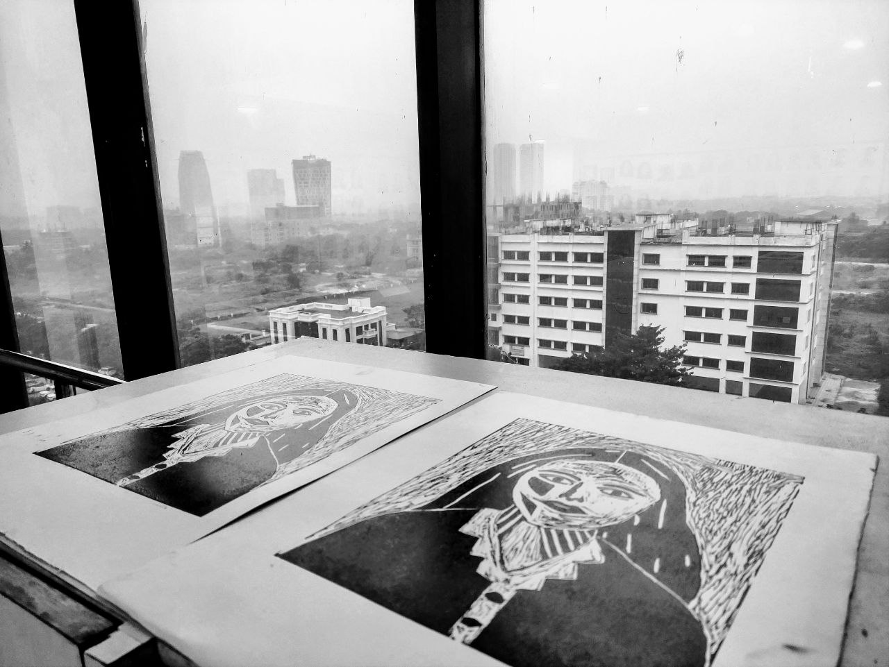
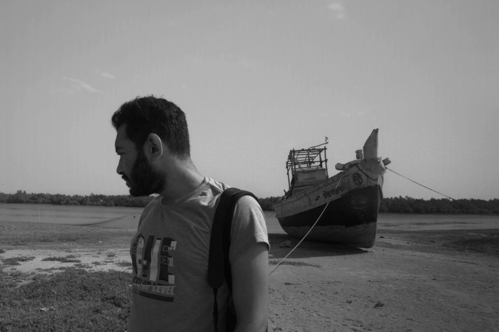
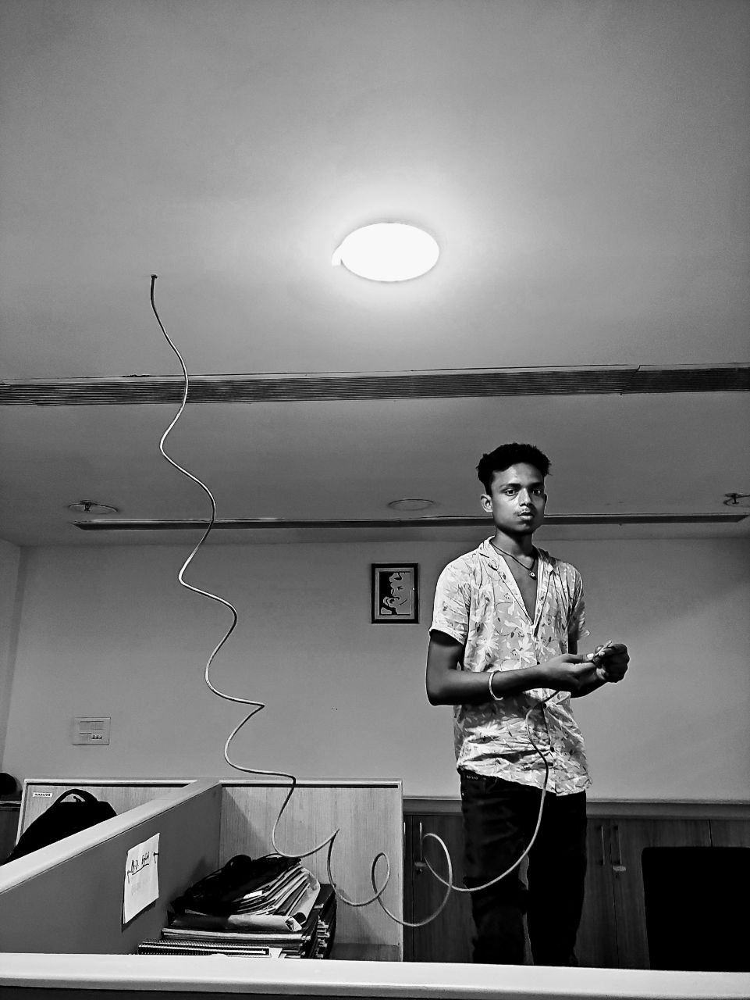
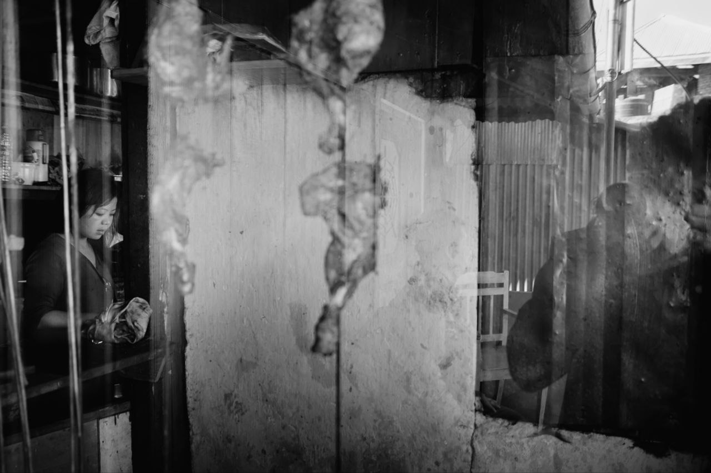

Street






A visual archive of streets, silences, rituals, labour, shadows, and ordinary cosmologies. These photographs attempt to stay close to the ground—to the earthbound.
Enter the Archive



An ethnographic documentary photography project exploring everyday lives, vulnerability, habitation, and urban intimacy among street-dwelling communities in Kolkata. One of the photographs from this project was published by BBC UK (17 April 2013), marking an early public recognition of documentary work rooted in witnessing rather than distance.
I am Ray Kawshik, a researcher, teacher, and visual ethnographer. My work moves between literature and photography, between theory and the street. I am interested in how images think—how they hold labour, ritual, climate, silence, and human vulnerability without reducing them to explanation. Photography, for me, is not illustration. It is a way of staying answerable to the world.